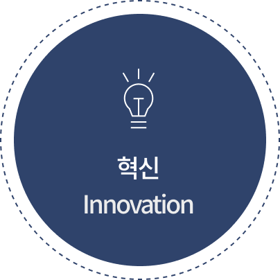
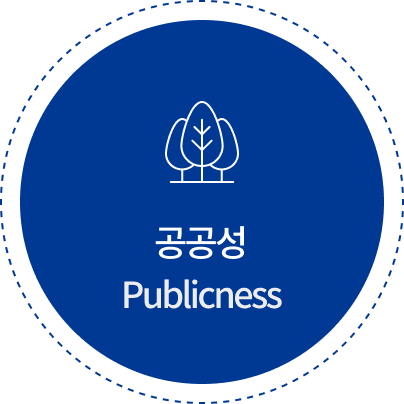
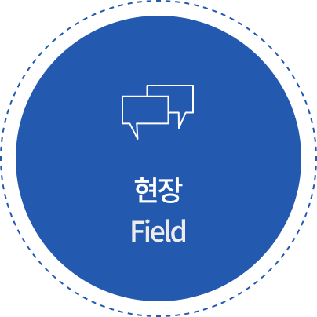
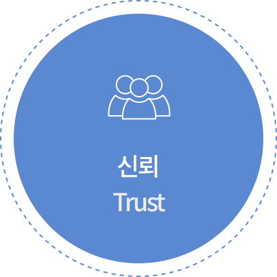

전략체계


3대 추진전략 9개 실행과제
중진공 핵심가치




중진공은 지속가능한 윤리˙인권경영으로 국민중심의 공정사회 구현을 선도합니다
추진전략 및 실행과제
- Ⅰ윤리˙인권 경영체계 고도화
-
01책임당담관 지정˙운영
02윤리˙인권 행동기준 제공
03모니터링 강화
- Ⅱ 윤리˙인권 실천생활화
-
04윤리˙인권교육 내실화
05실천프로그램 확대
06외부 소통 확대
- Ⅲ 윤리˙인권 지정기능 강화
-
07윤리˙인권 제도 개선
08인권영향평가 내실화
09외부평가 대응 강화
규범체계
- 행동강령
-
윤리헌장, 임직원행동강령, 인권경영이행지침, 임원청렴계약 등
- 처분규정
-
인사규정(징계), 직무관련 범죄 고발지침, 퇴직임직원 윤리기준 등
- 예방신고
-
부패신고 처리 및 신고자 보호지침, 부정청탁 및 금품수수 처리지침 등
평가환류
- 성과지표
-
청렴도, 사책평가, 윤리경영실천지수
- 성과보상
-
마일리지, 포상금, 기관장 표창
- 결과환류
-
윤리경영˙감사˙교육 연간계획 반영